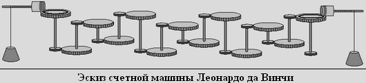

|
Давным давно жил изобретатель "Леонардо Да Винчи". И однажды он создал вычислительную машину (калькулятор).


рр
It is believed that during Leonardo's lifetime, the machine was not created. However, in 1968, Dr. Roberto Guatelli recreated the calculator using drawings. Small improvements have been made over Leonardo's original sketch to give the viewer a clearer picture of how each of these 13 wheels can move independently and still maintain a ten to one ratio. However, over the course of a year, objections arose about the accuracy of the counting machine, and the doctor decided to remove the controversial model from the collection.
| |